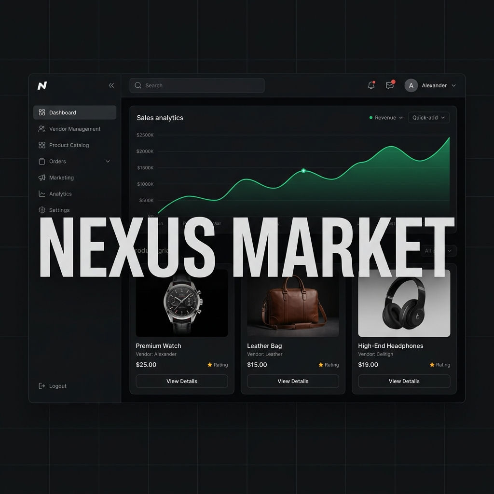

Laravel
PHP
MySQL
Bootstrap
Nexus Market
The Industry Gap: E-commerce vendors face steep commission fees on international platforms while suffering frequent payment settlement disputes and slow local currency payouts.
How I Came In: Engineered an independent multi-vendor marketplace featuring isolated seller dashboards, automated affiliate commission tracking, and high-speed database queries handling concurrent buyer carts.
Significance & Outcome: Sub-second query response times under high-volume multi-vendor transactions, zero inventory sync latency, and immediate local currency payout settlement.